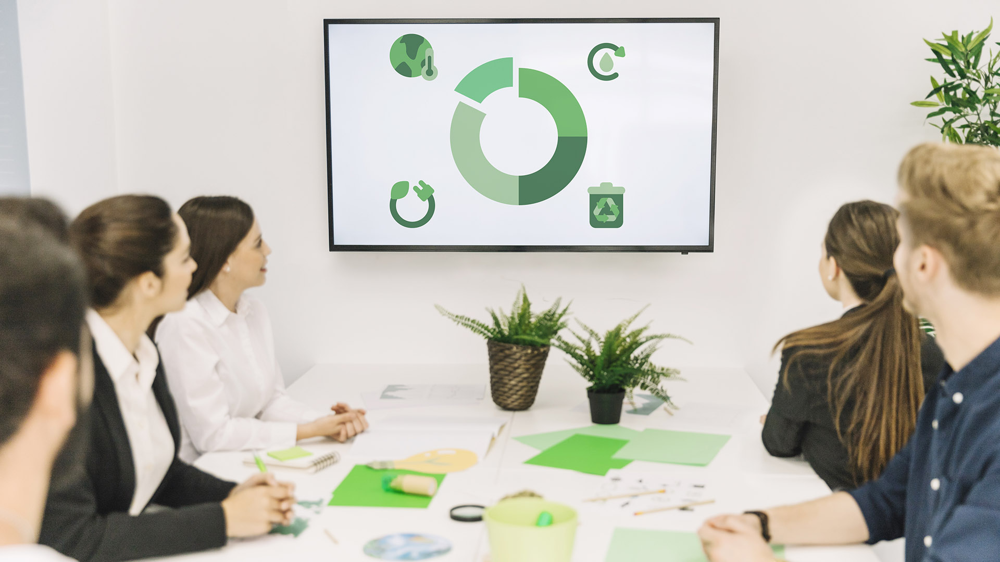

Ecosystem8Skills
Venha para o lançamento do Ecosystem8Skills, o primeiro Ecossistema Circular que atua com o desenvolvimento de habilidades Circulares
Participe gratuitamente do evento que apresenta o primeiro modelo brasileiro de desenvolvimento de competências para a transição circular — criado para preparar pessoas, organizações e territórios para os desafios da nova economia.
Garanta sua vaga gratuita agora. Vagas limitadas.
Por que participar do lançamento?
- Conheça o Ecosystem8Skills, uma abordagem inovadora que integra competências técnicas, comportamentais e sistêmicas para a Economia Circular.
- Descubra como o modelo pode ser aplicado em empresas, governos, escolas, indústrias e comunidades.
- Conecte-se com especialistas, pesquisadores e líderes que estão moldando o futuro da sustentabilidade no Brasil.
- Receba acesso antecipado a conteúdos, trilhas e oportunidades do ecossistema.
- Participe de um movimento que transforma conhecimento em impacto real.

O Ecossistema que integra Circular Soft Skills, Hard Skills e Meta Skills para formar profissionais da Economia Circular.
- Aprenda a aplicar Design Circular People, Design Organizacional Circular e Circular Softskills em modelos colaborativos e complexos.
- Explore Construção Circular, Moda Circular, Resíduos Inteligentes e Economia Circular — pilares de um novo jeito de aprender e construir.
- Especialistas do Brasil, Portugal e Rússia reunidos em um evento 100% on-line e gratuito.

O que você vai vivenciar no evento
Apresentação oficial do Ecosystem8Skills
Entendimento das 8 competências circulares
Exemplos reais de aplicação em territórios e organizações
Conexão com especialistas nacionais e internacionais
Lançamento das trilhas formativas e oportunidades de parceria
Espaço para perguntas, diálogo e construção coletiva
Para quem é o Ecosystem8Skills?
Se você quer desenvolver competências para atuar na nova economia, este evento é para você.
O que torna o Ecosystem8Skills único?
Integra Soft Skills, Hard Skills e Meta Skills em um único modelo circular
Conecta pessoas, instituições, territórios e oportunidades
Baseado em conteúdos internacionais e nacionais, com estratégias e frameworks flexíveis construídos pela aplicação do método Mindset do Linear ao Circular de Celene Britto.
Construído de forma colaborativa com especialistas e parceiros
Focado em impacto real, mensurável e contínuo
O que dizem sobre o nosso evento passado
vozes de quem viveu a experiência
Venha construir este ecossistema conosco
Se a sua organização acredita na inovação e na transição para uma economia mais sustentável, há um espaço reservado para você nessa jornada. Parceiros do Ecosystem8Skills ganham muito mais do que visibilidade — ganham propósito compartilhado.
Preencha o formulário e nossa equipe entrará em contato para conversarmos sobre as possibilidades.
Quem realiza
O lançamento é uma realização da EcoRecitec e do Instituto Mentalidade Ecossistêmica – I-Merci, com apoio de instituições que fortalecem a inovação, a educação e a sustentabilidade no Brasil.
Essas organizações estão como parceiros nesta Jornada do Linear ao Circular e estão validando o desenvolvimento do Ecosystem8Skills, fortalecendo sua relevância e impacto.


Garanta sua vaga gratuita para o lançamento
As inscrições são gratuitas, mas as vagas são limitadas.